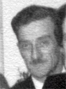

fiche familiale
*******************************************************************************
 |
Hélène Henri décède à l'âge de 66 ans. Naissance le 5 mai 1924 à Macamic. Parrain son frère Gérard, marraine sa soeur Mary. Décès le 29 novembre 1990 à Châteauguay. Sépulture au cimetière St-Joachim de Châteauguay Père: Eugène Henri Mère: Graziella Provost (sa famille) |
Mariage le 8 août 1946 à St-François-de-Sales de Destor
 |
Époux: Onil Bergeron Naissance vers 1920 Décès le 12 janvier 1952 à Reneault. Sépulture au cimetière Notre-Dame de Rouyn-Noranda Père: Ovila Bergeron Mère: Emilia-Exilia Paquin (sa famille) |
| Enfant 1 Nicole Bergeron décède à l'âge de 13 ans. Naissance: 19 oct 1947 à Reneault Décès: 7 oct 1961 à Châteauguay Sépulture au cimetière St-Joachim de Châteauguay |
Enfant 2 Monique Bergeron
Naissance: 9 fév 1949 à Reneault
Mariage le 6 avril 1968 à
Notre-Dame-de-l'Assomption de Châteauguay
Conjoint: Denis Larochelle
Père: Réal Larochelle
Mère: Yvonne Legault
Enfant 1 Stéphane Larochelle
-------------------------------------------------------------------------------
Enfant 3 Myriam Bergeron
Naissance: 1 mai 1952 à Rouyn-Noranda
Mariage le 28 nov 1970 à
Notre-Dame-de-l'Assomption de Châteauguay
Conjoint: Yvon Brazeau
Père: Gaston Brazeau
Mère: Zélia Foisy
Enfant 1 Martin Brazeau
*******************************************************************************
Mariage le 5 sep 1959 à Châteauguay.
|  |
Époux: Marc-Aurèle Birtz décède à l'âge de 64 ans. Naissance en 1912. Décès en 1976 à Châteauguay. Sépulture au cimetière St-Joachim de Châteauguay Père: Charles-Émile Birtz Mère: Elodie Drolet |
Enfant 1 Suzie Birtz
Naissance: 17 juin 1960 à Châteauguay
Conjoint: Jacques Carpentier
-------------------------------------------------------------------------------